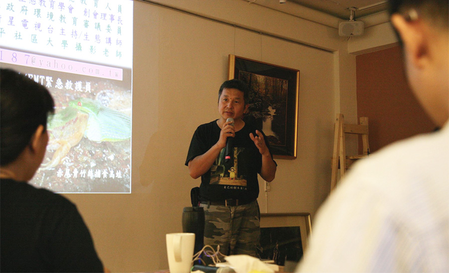

從仿生學談護樹行講座圓滿落幕
護樹協會 September,25,2015
講者 : 陳仰聖 生態講師
時間 : 9月26日14：00~17：00
地點 : 山佳伊 3+1café (台中市西屯區玉門路80巷1號)
謝謝陳仰聖老師(乖乖哥哥)特地從桃園到台中跟大家分享『仿生學』的奧妙，大家聽得眼睛瞪超級大！
例如:一隻美麗蝴蝶的印象，藝術家會將他創作為有價值的藝術品、設計手機的人員，觀察蝴蝶飛翔時發現蝴蝶翅膀的彈片，讓牠任意地揮動翅膀而不受傷，便將原本常故障的掀背式手機，加入簧片保護。讓手機故障率減少了許多，並稱之為蝴蝶機而大賣。
你還知道蝴蝶身上有四萬多個鱗片嗎? 除了不讓蜘蛛網黏住外，其實最大的用途在快速吸收太陽能作為其飛行的「燃料」。
目前世界上已經很多科學家積極透過蝴蝶快速吸熱原理研究，相信奈米太陽能板指日可待。
而在仿生學的世界中，蝴蝶不過是萬物的冰山一角....。

有人會後回饋陳老師，說他原本對於台灣的環境問題，甚至是社會問題感到無力且失望，但是聽完講座之後，才知道台灣真的是塊寶島，才知道台灣有許多世界之最，才知道台灣靠著上帝給予的自然資源就可以不愁吃穿。
原來只是人類忙碌到無法好好觀察身旁的萬物，原來世界上的大大小小發明都是跟動植物學習，原來仿生學一點都不難，只是大家忘了世界除了人之外還有其他生物擁有智慧罷了。
陳老師除了帶大家認識台灣之美外，也一直提倡環境教育，今天他帶著小折從桃園楊梅搭火車到台中龍井，接著從龍井騎單車到位在大肚山的山佳伊咖啡，充分落實了減少碳排放的微旅行。
上帝創造萬物，卻獨給人類超越的智慧與萬能的雙手，就是要我們照顧地球，並與萬物學習。
謝謝陳老師帶給大家一個愉快的中秋佳節，也期待下一次的優質講座，也謝謝大家對台灣護樹協會的支持！